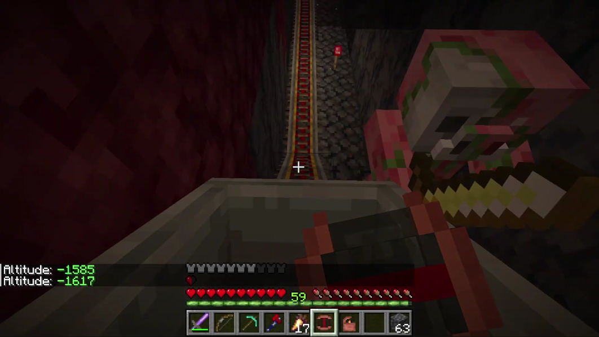

Zombies
The central identity of any "Zombie Apocalypse" is, of course, the zombies, and the horde does not disappoint. There are 9 types of zombies, which you can read more about at this page(also linked aboove).
The Horde is a modded Minecraft zombie apocalypse server designed to be compatible with vanilla clients, but still offering a very modded and nonvanilla experience. The server does have lore, which you can interact with a lot or not. More information can be found in the lore page linked at the bottom of the page.

One of the main aspects of this server is its custom progression, which allows you to progress through the game in an entirely unique way, which is somewhat more realistic than vanilla. There is a step-by-step guide in the advancements tab (press L). This system is a good bit harder and grindier than vanilla, so even if you consider yourself pretty good at the game, it should offer something of a challenge. The end goal is to craft a Pot'al, and plant a sapling in it, creating a portal which you can use to ascend to a dimension where everyone is in creative.
The central identity of any "Zombie Apocalypse" is, of course, the zombies, and the horde does not disappoint. There are 9 types of zombies, which you can read more about at this page(also linked aboove).


The wheel keeps turning. Details change, everything and everyone changes, but one thing stays constant. Can you guess what it is? -The Merchant